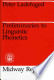
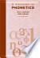
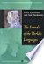
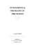

Web
Images
Videos
Maps
News
Shopping
Gmail
more
Books
Finance
Translate
Scholar
Blogs
Realtime
YouTube
Calendar
Photos
Documents
Reader
Sites
Groups
even more »
Account Options
Sign in
My library
Help
Advanced Book Search
Preliminaries to Linguistic Phonetics
By Peter Ladefoged
Take our survey
New!

0 Reviews
Write review
About this book
Add to My Library
▼
Get this book
University of Chicago Press
Amazon.com
Barnes&Noble.com
Books-A-Million
Find in a library
All sellers »
Related books



All related books »
Loading...
Pages displayed by permission of
University of Chicago Press
.
Copyright
.
Pages